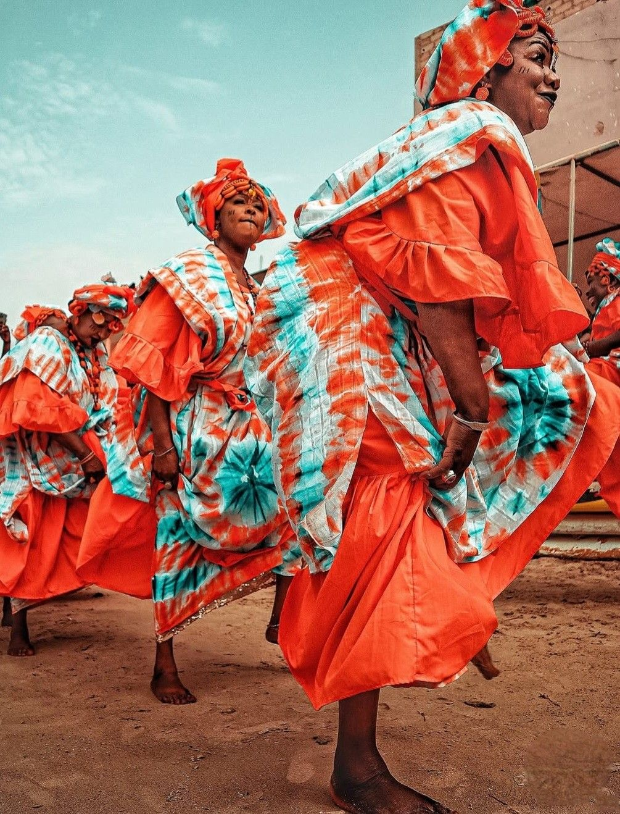
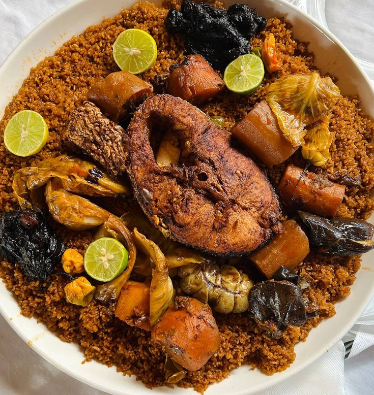
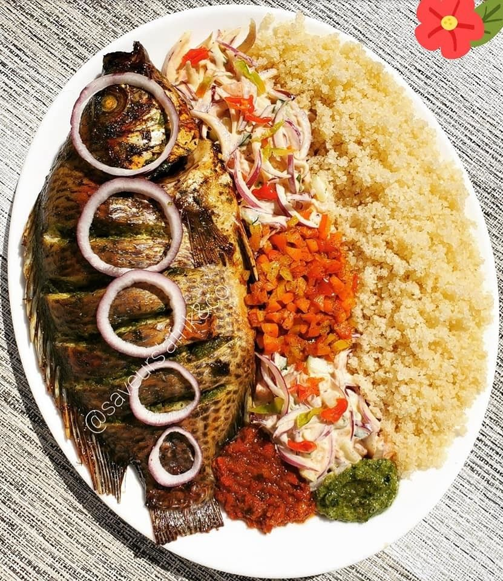
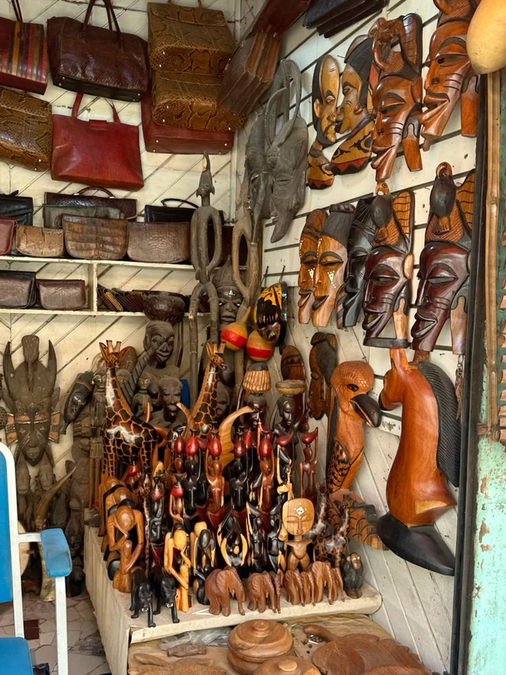
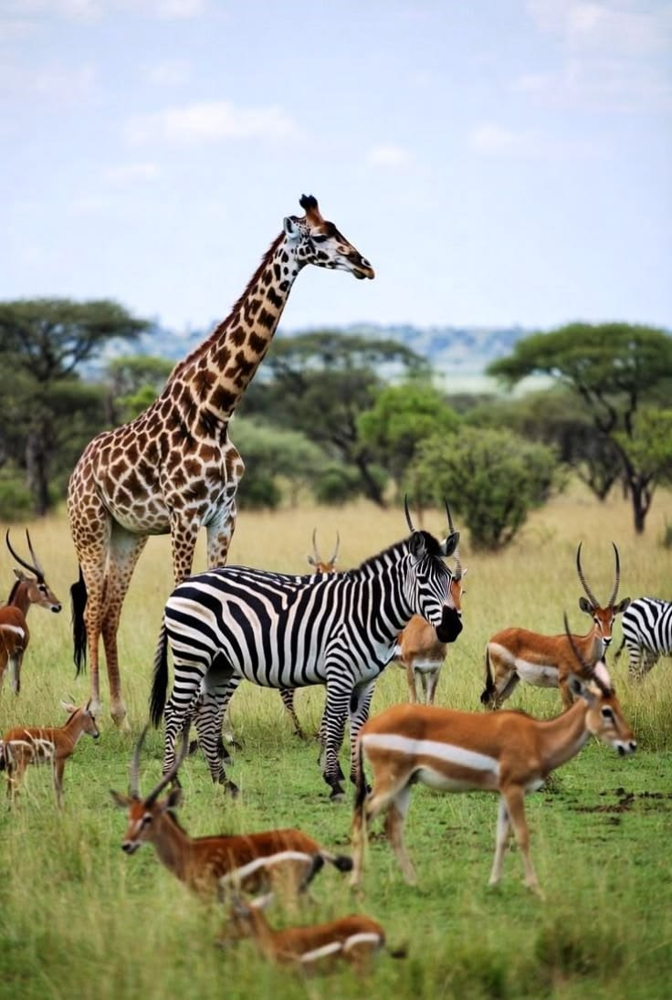
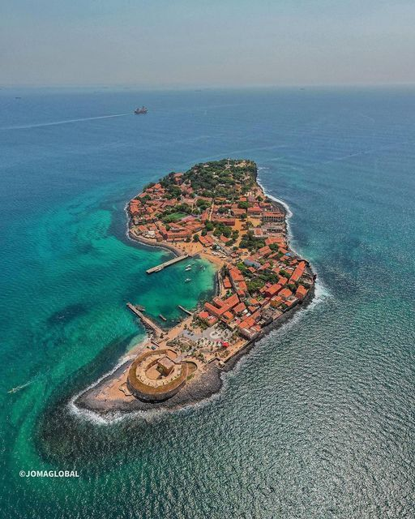
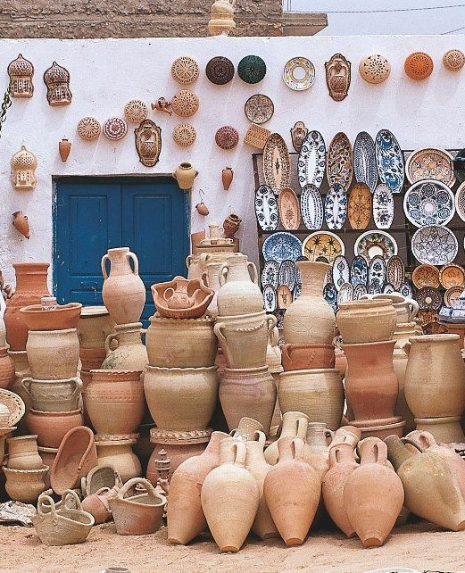
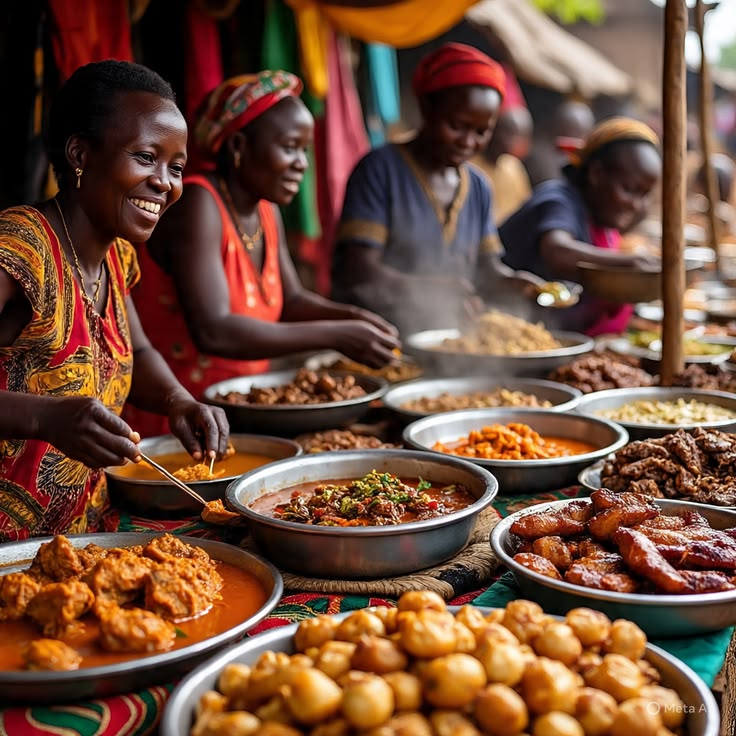

01
Traditions
Découvrez les traditions et les savoir-faire qui racontent l'histoire des peuples africains.
DécouvrirDécouvrez la richesse, la culture, les traditions et la diversité du continent africain.
Découvrir Sunu_AfricaSunu_Africa est un espace dédié à la découverte de la richesse et de la diversité du continent africain.
À travers la culture, l'artisanat, la gastronomie et les destinations, nous souhaitons mettre en lumière les histoires, les savoir-faire et les traditions qui font la beauté de l'Afrique.
En savoir plusL'Afrique possède une diversité culturelle exceptionnelle, transmise de génération en génération.
Découvrez les traditions et les savoir-faire qui racontent l'histoire des peuples africains.
DécouvrirDes rythmes traditionnels aux sonorités modernes, la musique fait vibrer l'Afrique.
Découvrir
La danse exprime l'identité, les émotions et les histoires des différentes communautés.
Découvrir
L'artisanat africain reflète la créativité, l'histoire et l'identité de nombreuses communautés.
Textiles, bijoux, poteries, sculptures et objets traditionnels témoignent de savoir-faire transmis au fil des générations.
Une cuisine riche en couleurs, en traditions et en saveurs.

Un plat emblématique du Sénégal à base de riz, de poisson et de légumes.
Découvrir
Une recette savoureuse à base de poisson, d'oignons, de tomates et de manioc.
DécouvrirUn plat de riz parfumé et épicé très apprécié en Afrique de l'Ouest.
DécouvrirDes paysages exceptionnels, des cultures uniques et des expériences inoubliables.

Découvrez quelques instants qui racontent la beauté, la diversité et l'énergie du continent.


Découvrez des histoires, des conseils et des inspirations autour de l'Afrique.

Partez à la découverte de paysages exceptionnels et de destinations incontournables du continent africain.
Lire l'article
Entre textiles, bijoux et sculptures, découvrez des savoir-faire transmis de génération en génération.
Lire l'article
Découvrez une cuisine riche et variée, où chaque plat raconte une histoire et une tradition.
Lire l'article